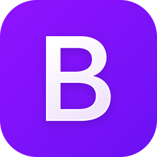
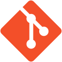
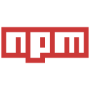

Hi,👋
My name is
Johanna
I build things for the web
Hi,👋
My name is
I build things for the web

I am a full-stack JavaScript student at Chas Academy, based in Stockholm, transitioning into web development after nearly 12 years in international business development.
I enjoy coding and creating visually appealing websites and applications that are intuitive, logical and enjoyable to use. I am passionate about finding smart solutions, improving processes and turning ideas into practical digital experiences.
Throughout my career, I have worked with customers and cross-functional teams across Europe, gaining experience in project management and product development. Fluent in Swedish, English and French, with a working knowledge of Spanish, I bring an international perspective and strong communication skills.
I am now combining my professional experience with my growing technical skills to create digital solutions that are both functional and enjoyable to use.
Technologies I use regularly:





Things I have built so far:
Loading projects...
For any questions please email me at: johanna@example.com